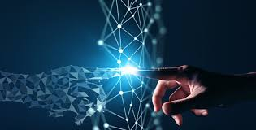
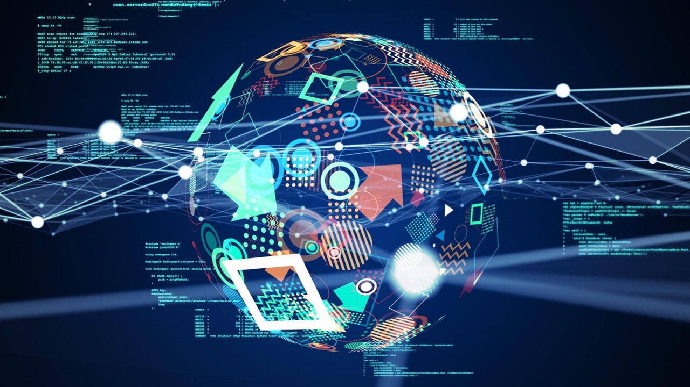

Dijitalleşme Nedir?
Dijitalleşme, son yüzyılın en önemli kavramlarından biri haline gelmiştir. Günümüzde teknolojinin etkisi hayatımızın her alanında hissedilmektedir. Dijitalleşme, genel anlamda, analog verilerin dijital bir forma dönüştürülmesi ve dijital teknolojilerin bireyler, işletmeler ve toplumlar üzerinde etkili bir şekilde kullanılması sürecini ifade eder.
Örneğin, eskiden basılı olarak tutulan kütüphane kayıtlarının artık dijital veri tabanlarına aktarılması, insanların bilgiye çok daha hızlı ve kolay bir şekilde erişmesine olanak tanımaktadır. Ya da günlük hayatımızda vazgeçilmez hale gelen sosyal medya, dijitalleşmenin insan ilişkilerini nasıl kökten değiştirdiğinin bir göstergesidir. Ancak dijitalleşme sadece bireyler için değil, aynı zamanda ekonomik ve sosyal sistemler için de hayati öneme sahiptir.
Bugün, eski teknolojilerden modern yapay zekaya kadar birçok alanda dijitalleşmenin etkisini görmekteyiz. Bu süreç, insanlığın bilgiye ulaşım şeklini, çalışma düzenini ve hatta düşünce tarzını değiştirmiştir. Dijitalleşme sadece bir teknoloji trendi değil, insanlık tarihindeki en büyük dönüşümlerden biridir.
Tarihte Dijitalleşme Süreci
Dijitalleşme bir anda ortaya çıkmış bir olgu değildir. İnsanlık, bu noktaya ulaşana kadar uzun bir yol kat etmiştir. Tarihin her döneminde farklı teknolojik atılımlar, dijitalleşmenin yapı taşlarını oluşturmuştur. İşte bu sürecin öne çıkan dönüm noktaları:
- Bilgisayarların İcadı: 1940'larda başlayan bu süreç, bilim dünyasında devrim yarattı. İlk bilgisayarlar, karmaşık hesaplamaların hızlı bir şekilde yapılmasını sağladı ve bu teknolojinin gelecekteki potansiyelini ortaya koydu.
- İnternetin Yaygınlaşması: 1990'larda internetin bireylerin kullanımına açılması, insanlık tarihinin en büyük bilgi devrimlerinden birini başlattı. Artık bilgiye erişim, coğrafi sınırları aşarak global bir boyut kazandı.
- Mobil Teknolojiler: Akıllı telefonların ve mobil uygulamaların hayatımıza girmesi, dijitalleşmeyi günlük yaşamın merkezine taşıdı. İnsanlar artık her an her yerden bilgiye erişebiliyor, alışveriş yapabiliyor veya iletişim kurabiliyor.
- Endüstri 4.0: Günümüzde, yapay zeka, büyük veri ve otomasyon gibi teknolojiler, üretim süreçlerinden sağlık hizmetlerine kadar birçok alanda köklü değişiklikler yaratmaktadır.
Bu dönüm noktaları, sadece teknolojik gelişmelerin değil, aynı zamanda toplumsal ve kültürel değişimlerin de habercisidir. Dijitalleşme süreci, insanlık tarihindeki her büyük dönüşüm gibi, hem fırsatlar hem de zorluklar sunmaktadır.
Dijitalleşmenin Etkileri
Dijitalleşme, eğitimden sağlığa, sanayiden günlük hayata kadar her alanda önemli etkiler yaratmıştır. Eğitimde dijital platformlar sayesinde uzaktan eğitim mümkün hale gelirken, sağlık sektöründe dijital cihazlar ve veri analitiği sayesinde hastalıkların daha hızlı teşhis edilmesi sağlanmıştır. Ancak bu etkiler sadece olumlu olmakla kalmamış, aynı zamanda bazı endişelere de yol açmıştır. Örneğin, dijitalleşme ile birlikte ortaya çıkan siber güvenlik tehditleri ve kişisel verilerin mahremiyeti, modern toplumun karşılaştığı önemli sorunlardandır.
İnsanların sosyal hayatlarını şekillendirme biçiminden iş yapış tarzlarına kadar her şeyi etkileyen bu dönüşüm, aynı zamanda yeni fırsatlar yaratırken bazı geleneksel yapıları da tehdit etmektedir. Bu nedenle, dijitalleşmeyi sadece bir teknoloji gelişimi olarak değil, insanlık tarihinde bir dönüm noktası olarak değerlendirmek gerekir.
HTML Eğitimi Videosu (En Basit Hali)
Olumlu ve Olumsuz Yönlere Göz Atın:
Bu Konu Hakkında Benim Fikirlerim
Dijitalleşme, insanlığın gelişimindeki en büyük atılımlardan biri. Geçmişte fiziksel emekle yapılan birçok işin bugün dijital araçlarla yapılması hem zaman hem de enerji tasarrufu sağlıyor. Bence dijitalleşme, bilgiye erişimi kolaylaştırdığı gibi, yaratıcı düşüncelerin daha hızlı hayata geçmesini sağlıyor. Örneğin, bir fikrinizi hemen dijital bir platformda paylaşabilir, geri bildirim alabilir ve onu geliştirebilirsiniz.
Her ne kadar bazı zorlukları ve endişeleri olsa da (örneğin, mahremiyet ve güvenlik sorunları), doğru kullanıldığında dijitalleşme, insanlık için sınırsız olanaklar sunuyor. Gelecekte bu dönüşümün daha iyi bir dünya yaratmamıza katkı sağlayacağına inanıyorum.